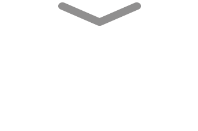

Yuk kita mengenal Intervensi Gizi Sensitif
dari Percakapan Nia dan Sinta
Scroll untuk memulai

Intervensi Gizi Sensitif
Sasaran dari intervensi gizi spesifik adalah masyarakat secara umum dan tidak khusus ibu hamil dan balita pada 1.000 Hari Pertama Kehidupan/HPK. Kegiatan terkait Intervensi Gizi Sensitif dapat dilaksanakan melalui beberapa kegiatan yang umumnya makro dan dilakukan secara lintas Kementerian dan Lembaga. Kegiatan pembangunan diluar sektor kesehatan berkontribusi 70% terhadap intervensi stunting. Ada 12 kegiatan yang dapat berkontribusi pada penurunan stunting melalui Intervensi Gizi Spesifik sebagai berikut:
• Menyediakan dan memastikan akses terhadap air bersih.
• Menyediakan dan memastikan akses terhadap sanitasi.
• Melakukan fortifikasi bahan pangan.
• Meningkatkan ketahanan pangan dan gizi.
• Menyediakan akses kepada layanan kesehatan dan Keluarga Berencana (KB).
• Menyediakan Jaminan Kesehatan Nasional (JKN).
• Menyediakan bantuan dan jaminan sosial bagi keluarga miskin.
• Menyediakan Jaminan Persalinan Universal (Jampersal).
• Memberikan pendidikan pengasuhan pada orang tua.
• Memberikan edukasi kesehatan seksual dan reproduksi, serta gizi pada remaja.
• Memberikan Pendidikan Anak Usia Dini (PAUD) Universal.
• Memberikan pendidikan gizi masyarakat.